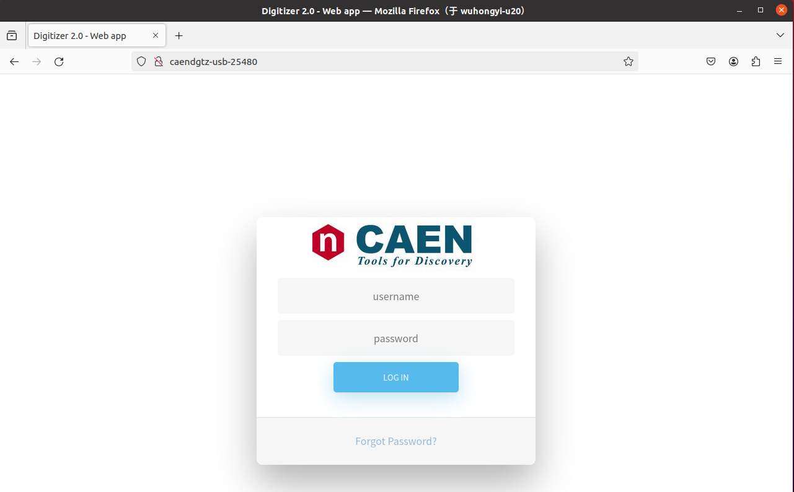

程序安装¶
本程序安装要求
Ubuntu 20.04
Qt 5
本程序测试过的系统目前只包含 Ubuntu20.04
软件安装步骤¶
删除个人目录下的老版本PKUCAENDAQ文件夹
将本程序包解压缩到个人目录中($HOME)
编译安装 driver 文件夹内驱动
cd driver
tar -zxvf CAENDGTZ-USB-Drv-1.2.tgz
cd CAENDGTZ-USB-Drv-1.2/
sudo ./install.sh
cd ..
tar -zxvf caen_felib-v1.3.0.tar.gz
cd caen_felib-v1.3.0/
./configure --disable-assert
make
sudo make install
sudo ldconfig
cd ..
tar -zxvf caen_dig2-v1.5.10.tar.gz
cd caen_dig2-v1.5.10/
./configure --disable-assert
make
sudo make install
sudo ldconfig
LINUX 系统中每个模块使用注册¶
由于某些 Linux 发行版无法自动检索数字化仪 USB 名称，因此第一次使用该模块时，需要先进行注册操作。模块注册需要逐个模块进行。即在进行注册操作时，仅能有一个模块通过 USB 连接到 LINUX 系统。
将 USB3.0 线缆 type-C 端连接到模块，另一端连接到电脑。然后在浏览器中输入 CAENDGTZ-USB-{PIDNUMBER}，这里 {PIDNUMBER} 替换为使用的模块的 PID 码，例如：CAENDGTZ-USB-25480 。看是否能访问，如果不能访问，说明还未对该模块进行驱动注册。
在 USB 驱动安装包内，例如 CAENDGTZ-USB-Drv-1.2 里面，有驱动注册脚本文件 regPID.sh，通过以下命令运行。执行之后会看到注册成功的提示。
sudo ./regPID.sh
之后，再通过网页访问 CAENDGTZ-USB-{PIDNUMBER}，即可看到以下登陆页面，默认用户名、密码均为 admin。
登陆之后界面如下所示，左侧菜单栏中，可以进行网络设置。如果想通过网线进行数据获取，则通过该页面进行 IP 设置。根据实验室网络情况，选择 DHCP 自动分配 IP 或者 Manual 手动配置 IP。进行 IP 设置之后，在浏览器中输入模块的 IP，则也可以访问该设置页面。